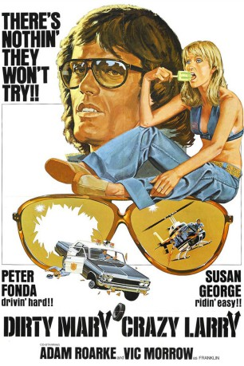
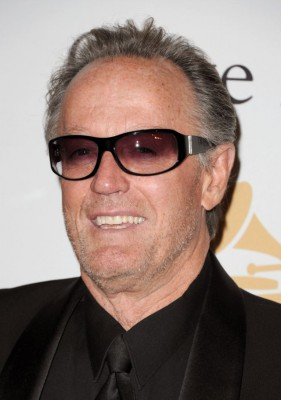
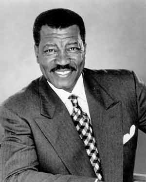
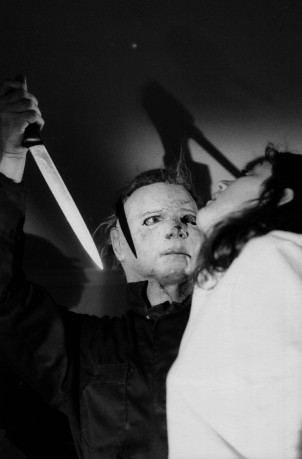
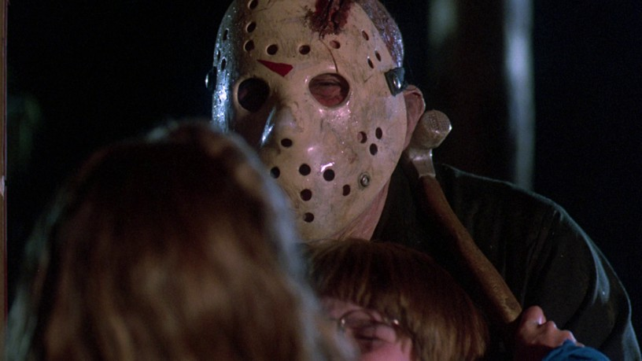
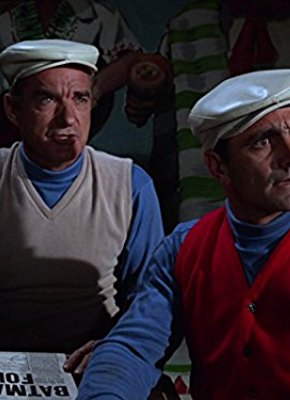

#7881 Kesse Mary - Irrer Larry
Alternativ: Dirty Mary Crazy Larry
 
 IMDB-Wertung: 6.7 / 10
IMDB-Wertung: 6.7 / 10  Metascore: 0
Metascore: 0 
Larry hat einen großen Traum: Der Rennfahrer will endlich auf dem Siegerpodest stehen. Dazu fehlt ihm allerdings ein schnelles Auto. Zusammen mit seinem Mechaniker Deke plant er einen Diebeszug, um an das nötige Kleingeld zu kommen. Endlich steht der passende Wagen vor der Tür. Doch die Cops sind den beiden bereits auf den Fersen. Gemeinsam mit der frechen Mary startet das Duo eine rasante Flucht.
Jahr: 1974
Dauer: 92 Minuten
FSK: 16
Land: USA Studio: Twentieth Century-Fox Film CorporationTonspuren:
Untertitel:
Auflösung: 1080p (1920x1040) Größe: 6717 MB
Genre: Thriller, Drama, Krimi, Liebe
Regisseur: John Hough
Drehbuch: Leigh Chapman
Soundtrack: Jimmie Haskell
Darsteller:
-  Peter Fonda als Larry
- Susan George als Mary
- Adam Roarke als Deke
 Kenneth Tobey als Donahue
Kenneth Tobey als Donahue- Lynn Borden als Evelyn
- Al Rossi als Surl
- Edna MacAfee als Seller at Swapmeet
-  Bob Minor als Trooper
-  Dick Warlock als Trooper
-  Ted White als Trooper
- Vic Morrow als Franklin
-  Al Wyatt Sr. als Bartender (uncredited)
- Eugene Daniels als Hank
- Janear Hines als Millie
- Elizabeth James als Dispatcher
- Adrianne Herman als Cindy
- T.J. Castronovo als Steve
- James W. Gavin als Helicopter Pilot
- Ben Niems als Police Chief Markey
- George Westcott als Bridge Operator
- Tom O'Neill als Farmer
- Don Coughlin als Swapmeet Character
- Sonny Dukes als Swapmeet Character
- Beau Gentry als Swapmeet Character
- Robert Hirschfeld als Swapmeet Character
- Bill Catching als Roy Bailes
- Jody Carlson als Telephone Operator
- Tom Howard Jr. als Trooper
- Craig Kelly als Trooper
- Larry Luttrell als Trooper
- Gary McLarty als Trooper
- Jerry Summers als Trooper
- Jerry Wills als Trooper
- Al Wyatt Jr. als Trooper
Datei: X:\1974\Kesse Mary - Irrer Larry (1974, FSK16, 1920x1040).mkv seit 02.01.2018
Festplatte: HD 1971-1979
 Es gibt insgesamt 33 Filme in der Gruppe '1974'
Es gibt insgesamt 33 Filme in der Gruppe '1974'